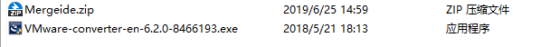
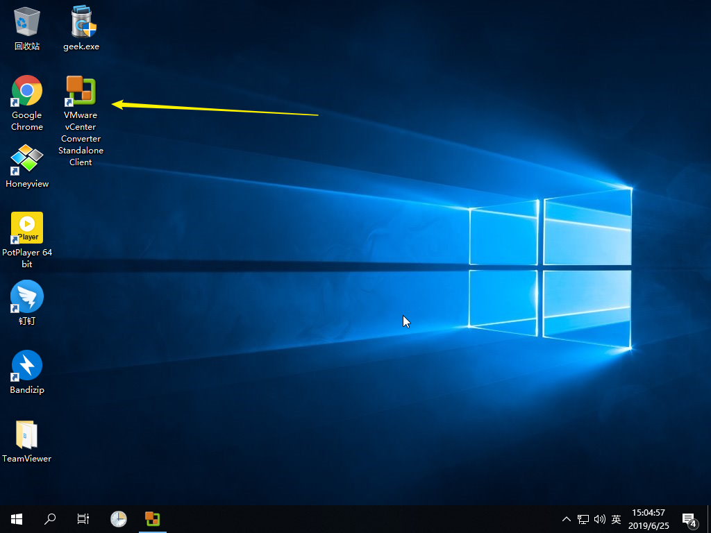
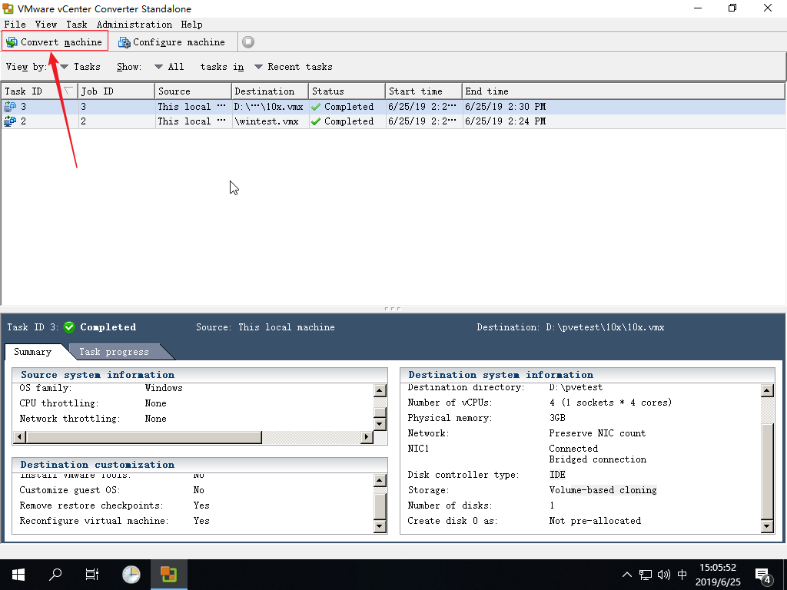
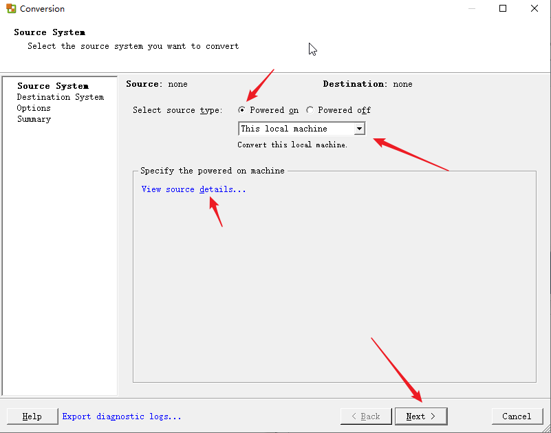
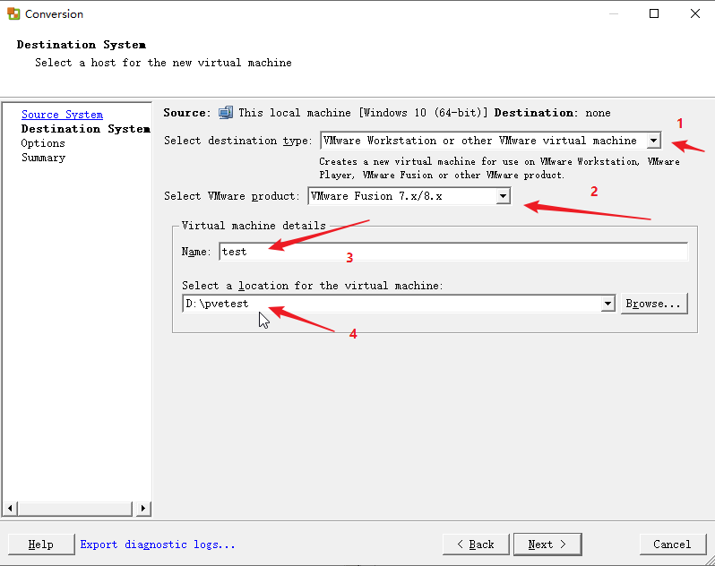
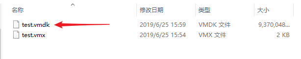
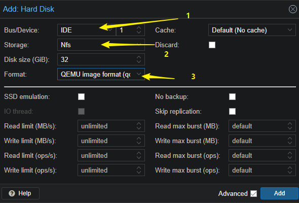
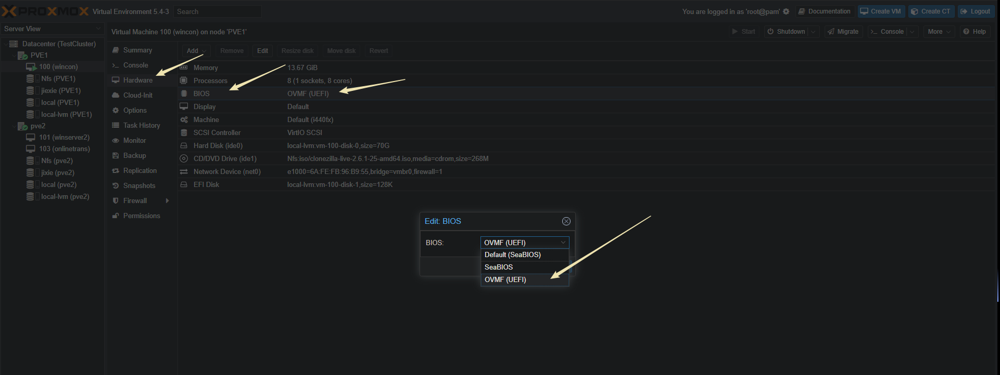

重要：优先选择再生龙的迁移方式，这个是离线迁移，能保证迁移前后数据的一致性。而且能在PVE上事先创建硬盘，相比其他方案，后续不容易出现兼容问题
首先，下载如下两个软件软件

第一个是加载一个IDE磁盘的注册表，貌似不用的话，导入到PVE后，虚拟机启动不起来
第二个是Vmware官方出品的转移软件，能实现在线和离线转移
这个是再生龙的光盘，挂载在虚拟机上面，然后选择从光盘启动就可以了
在线迁移
VM虚拟机操作部分
在不关闭VMware虚拟机的情况下，实现转移。但是该方案有缺点，不能确保数据的一致性
首先，在虚拟机运行压缩包里面的“mergeide.reg”，导入注册表
迁移软件安装在你需要迁移的虚拟机上面，不是主机

安装后以管理员身份打开，点击“Convert Machine”

按照下图操作，可以点击“View source details…” 验证连接情况

按照如图选择，需要注意：
- 位置2，版本一开始不需要选择太高，如果选择到12x，转移后，开启proxmox虚拟机，windows可能会蓝屏。（我测试是这样的，有空各位试试看是否也有这样的情况）
- 位置3，可以随意起一个英文名
- 位置4， 必须是U盘或网络位置，不要存放在本地的硬盘里

之后一直下一步，知道向导完成。然后等待导出
导出结束后，在你指定的位置查看文件，我们需要的，是那个容量大的vmdk文件

接下来，我们要把这个vmdk文件丢到PVE服务器能读到的地方，这里我创建了一个NFS服务器，你可以直接拿u盘连接PVE挂载，也可以使用winscp这个神器来上传文件
Proxmox操作部分
首先，我们在proxmox创建一个虚拟机，尽量硬件信息跟迁移的机器的配置一样。硬盘这部分的参数需要特别注意，如果你配置迁移后，发现启动不了，或者蓝屏，很大原因是因为硬盘配置有问题

- 位置1：我这里选择IDE（折腾几次都蓝屏了，不想搞了）后面如果发现性能有问题，可以试试用别的模式
- 位置2：选择一个存储位置，注意，不要选择local-lvm这个地点，不然后面系统启动不了（连硬盘都识别不到），目前不知道原因
- 位置3：选择qcow2
我们将刚才的vmdk文件上传，无论上传到NFS之类的服务器，还有PVE实体机本身，要确保PVE本身可以读写。之后，进入PVE实体机的shell
qemu-img convert -f vmdk /?/?/…/.vmdk -O qcow2 /var/lib/vz/images/100/.qcow2
上面 /?/?…/*.vmdk 是你上传vmdk的位置
/var/lib/vz/images 是proxmox默认的镜像文件位置（非LVM），你也可以根据你的文件的路径来。100 是你创建虚拟机的VMID号
转换后，编辑VM的配置文件
vim /etc/pve/local/qemu-server/100.conf
在ide0的行中：我们要将vm-100-disk-1.raw，size = 32G更改为windows-server.qcow2
然后我们移除原来的空磁盘
rm /var/lib/vz/images/100/vm-100-disk-1.raw
然后就可以开启虚拟机看看，如果启动蓝屏或者启动不了，google一下
附加教程(我参考的资料）
这个是官网的教程，可以参考里面的 “Physical (running) Windows server to Proxmox VE (KVM) using VMware Converter” 这一个章节
https://pve.proxmox.com/wiki/Migration_of_servers_to_Proxmox_VE
离线迁移
再生龙
首推再生龙，这个是一个开源的软件，对中文支持很好，PVE官网也有它的教程
使用过程中，要注意如下事项：
切记，一定要先导入IDE的注册表，不然蓝屏，启动不了的问题会让你欲哭无泪。。。。
pve创建虚拟机默认是SeaBIOS，是传统的启动模式，如果你迁移过来的虚拟机是UEFI启动的，一定要更改一下它的BIOS（在硬件那里修改为UEFI）

配置完服务端要ping一下服务器，看一下网络是否通顺
客户端需要输入的就两条命令
sudo ocs-live-netcfg
sudo ocs-onthefly -s 10.0.77.171 -t sda /// -s 后面接服务端的ip ，-t后面接需要靠边数据的磁盘，可以在客户机里面用命令lsblk命令查看
以下是官方的说明文档：
This method is fast, reliable and OS independent as it uses live cds.
- Get a live linux cd like CloneZilla.
- Prepare the source host, make sure that you have standard IDE drivers enabled (for WinXP/Win2003 use the mergeide.reg (File:Mergeide.zip) ), for W2k I followed this link (solution 2 worked for me): [2]
- Now, boot the physical host with Clonezilla, go for beginner mode and select device - device and then remote, just follow the wizard
- On the Proxmox VE host, prepare a KVM guest, make sure you got a big enough IDE disk assigned (add 1 GB extra to be on the safe side) and also boot this KVM guest with the live cd and execute a shell.
- Become root and run fdisk (fdisk /dev/sda/) to make sure that sda is here, exit fdisk with ‘w’. this was essential.
- Now enter all commands from the wizard on the source server tells you (configure network and request the copy process)
- After success (the wizard just copies the data, means I got a 80 GB disk but only 5 GB data on it so it was just a few minutes for the whole process on a gigabit network) just change the boot device to the hard disk and start the VM. Windows will install all needed drivers automatically, just the Intel NIC drivers for e1000 must be loaded from ISO (I got one big driver ISO from Intel containing all NIC drivers).
VMware converter
其他的参考
这个链接有一个命令很有用 ： qm importdisk
转移之后蓝屏，无限重启问题
再生龙的其他用法及介绍
这个windows 加载 virtio 总线的驱动，我也不知道有什么用，这里记录备用
这个遇到的情况和我很像，特此记录
- 无论是Windows系统或Linux系统，在KVM虚拟机设置时尽量设置硬盘为IDE，设成SCSI时会有问题。我在RedHat AS3 迁移中，发现IDE可以顺利转移(使用CloneZilla)，只需把/etc/fstab中原来/dev/sdax 更改为/dev/hdax。使用SCSI硬盘时，出现Kernel Panic错误
2.在Windows系统转移前，应当先执行mergeide.reg (查看微软的 KB 公告）以允许IDE接口，不然就会出现0x0000007B的蓝屏错误。但在实际迁移中，使用VMware 免费的工具Convert转移的vmdk文件再转换成qcow2文件后(具体方法参见Proxmox的wiki文档)，重启仍然蓝屏，最后只能使用windows系统盘修复安装以恢复错误(2003R2)。但是使用CloneZilla转换的Image文件恢复后，可以正常启动(只做过win2000服务器)。
LVM Thin Storage is much more stable then the qcow2. One thing are the snapshots. For example you have an machine with 50GB of memory und you make an Livesnapshot with qcow2 sometimes you will get an error. When not on creation then really on delete. The second thing. Raw is an nice generic format, like DD. You can do everything with, without convert… And it have better performance then qcow2.
local-lvm 这个区域只支持 raw 格式
/etc/pve/storage.cfg
这个文件是各个区域的配置文件，可以参考下方的连接
https://forum.proxmox.com/threads/disk-image-option-greyed-out-only-raw-availble.27943/
在创建硬盘的时候， Bus/Device 这个选项要尽量避免选择VirtIO Block和SCSI这个选项，不然系统识别不到硬盘，可以选择Sata